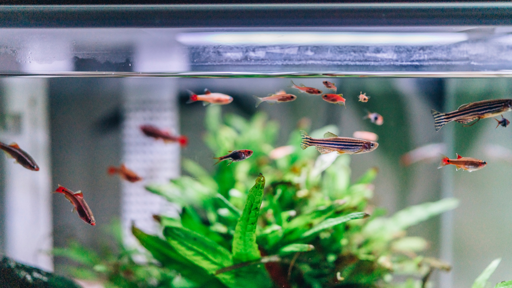
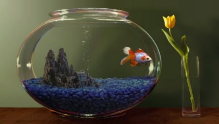
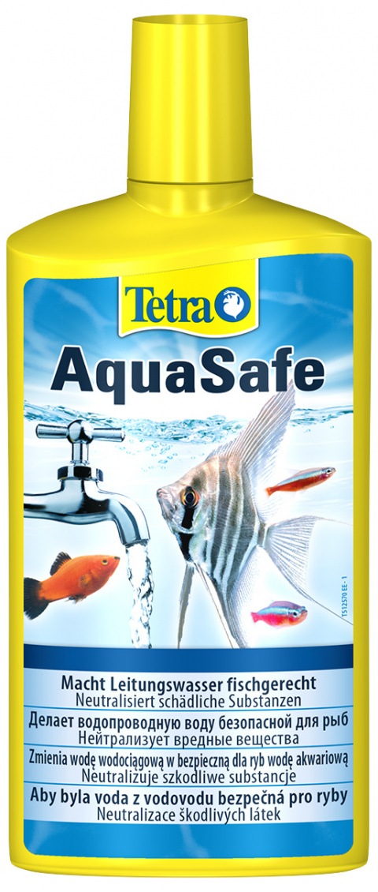

Gailīša uzturēšana ir salīdzinoši vienkārša. Galvenais, lai akvārijā ūdens būtu pietiekami silts (istabas temperatūrā + 18 - +20 oC). Tā maiņa atkarīga no ūdenstilpnes lieluma, piemēram 3 – 4 litru lielā akvārija ūdens jāmaina reizi 3 dienās. Ūdens maiņai var izmantot nostādinātu krāna ūdeni, taču vēlams ūdenim pievienot ūdens kondicionieri (piem. Tetra Aqua Safe), kas krāna ūdeni „sagatavo” izmantošanai akvārijos.
  